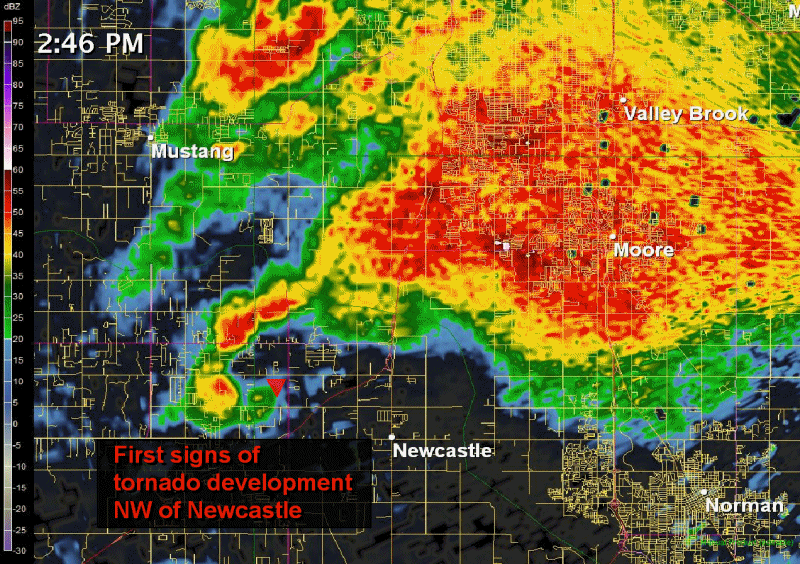
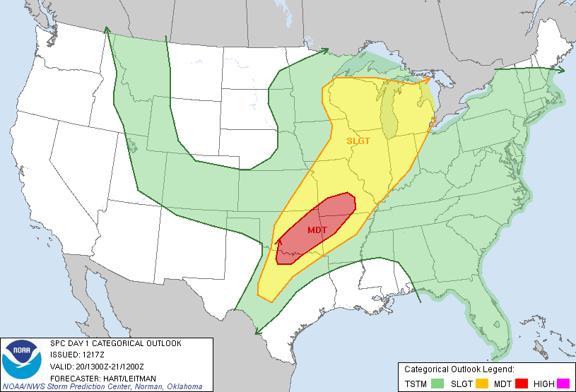
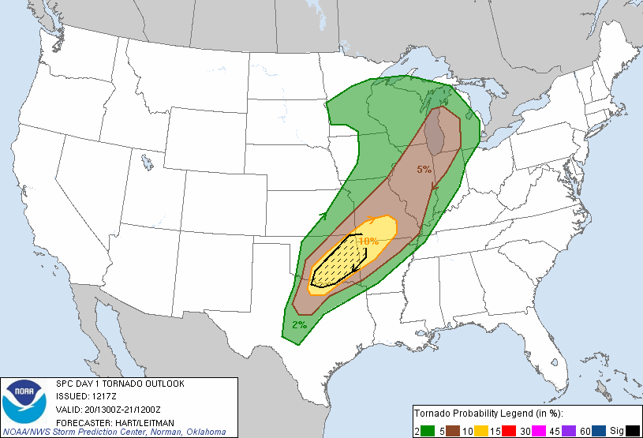

2013 Moore Tornado:
Deaths: 24
Injuries: 212
Max Wind: 210 mph (340 km/h)
Damages: $2 billion
Time on Ground: 37 minutes
Width: 1.3 miles (2.1 km)
This shows a general idea of the speed, damage, and formation of the tornado. The 210+ mph winds made 24 people lose their lives while 212 more got injured. Also, this 1.3 mile wide tornado lasted around 0.5 hours causing about $2.0 billion in damages. All homes in the path of this moster were completly leveled.

* Started as a multi-vortex tornado
* Progressively became a wedge tornado
* Had the most debris out of all tornados
* Very quick moving tornado

This shows how the storm developed. The white in the hook shows the debris ball that the tornado was creating. This is when debris is being launched into the atmosphere.

May 20th 2013 Convective outlook at 1217Z (2013 Moore EF5, notice the lack of the Marginal/Enhanced risk categories in the legend)

May 20th 2013 Tornado outlook at 1217Z (2013 Moore EF5, hatched area indicated a significant threat for tornadoes across parts of Oklahoma)

Velocity Radar loop of the Moore EF-5